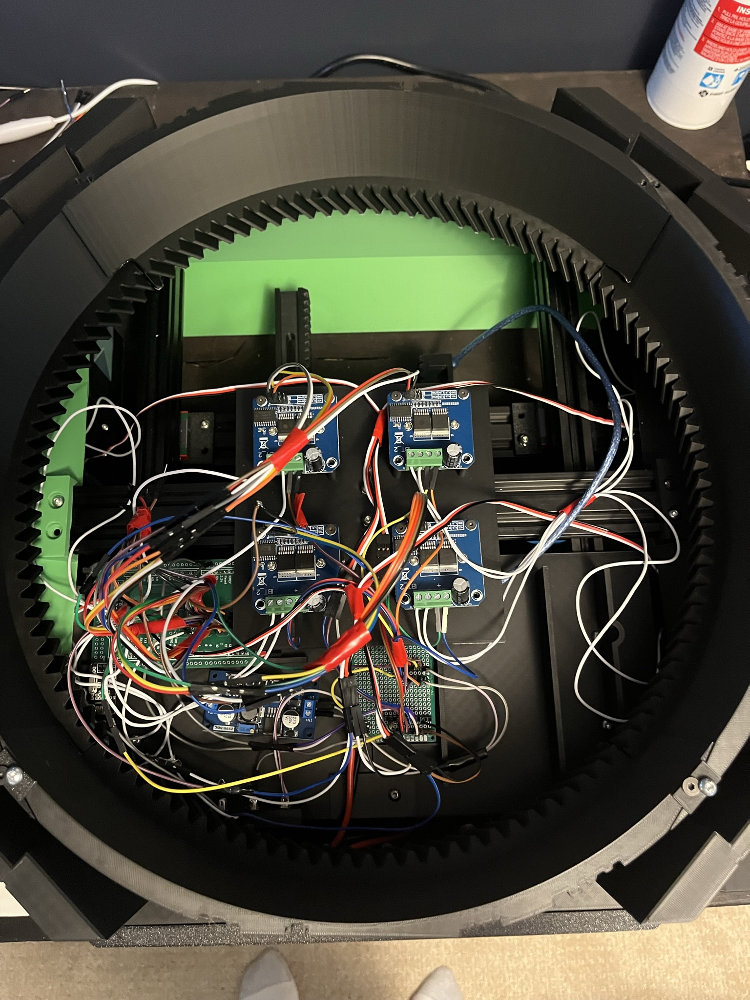
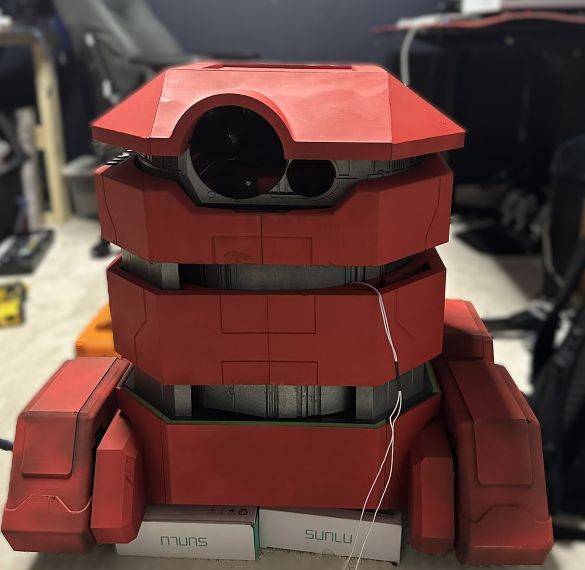

B2EMO
Full-scale, B2EMO replica from Star Wars.
- Full Scale and Functionality
- Omnidirectional Motion
- Arduino based Control System
- Full Demo Video
Mechanical Design
- The base of the robot is constructed with 2040 Aluminum Extrusion with Linear Rails to allow the wheels to seperate
- The rest of the robot apart from the bearings and Steel Rods is completely 3D printed with PLA
- Each Mecanum Wheel's height is manipulated using 150kg servos driving a herringbone rack and pinion
- The main 2 stage lifting mechanism to reveal the rings is controlled by an internal mechanism consisting of linear bearings a 150kg servo for each stage
- The rings each have an internal ring gear driven by seperate motors
- The head is manimulated by a Stewart Platform with an additional motor for the spinning motion

Electronics & Control
- The Arduino Mega has a custom pcb to neatly organize connections
- The 6 heavy lifting servers are connected directly the the Arduino
- The remaining servos are controlled by a Pololu Mini Maestro connected to the Arduino over UART
- Each wheel motor uses a BTS7960, while the rings use one L298N motor controller
- The system power is split among a 3s and 2s lipo battery with a few buck converters where needed
- The Arduino is connected to the controller using a NRF24L01
Software
- Programmed in Python
- Uses NRF communication pipeline to communicate with the controller
- Motion filters were applied to almost all inputs for smooth motion
- Click here to see the controller for this project

Final Result & Takeaways
This was my first major project! It took about a year to complete, with many major redesigns. It was completely designed in Fusion 360 and 3D printed on my BambuLab X1C. In the end I was fairly satisfied with how it turned out. If I were to come back to this project, I would do things very different, especially ditching the Arduino.